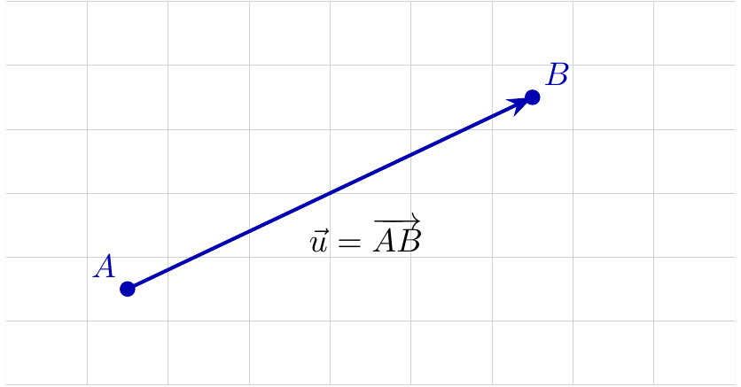
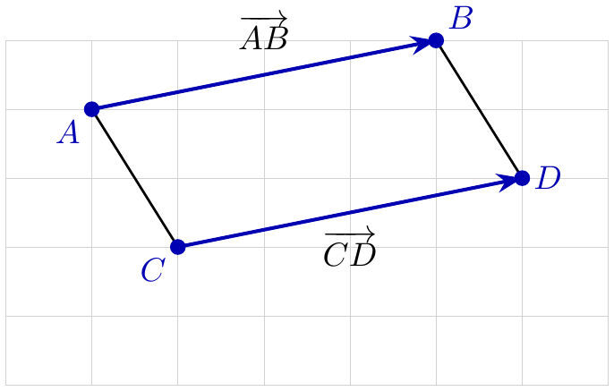
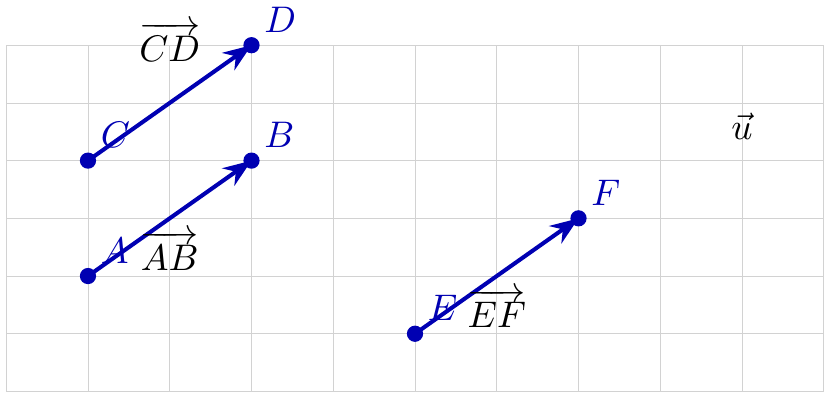
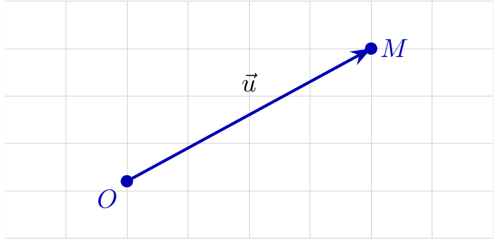
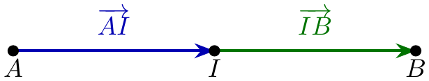
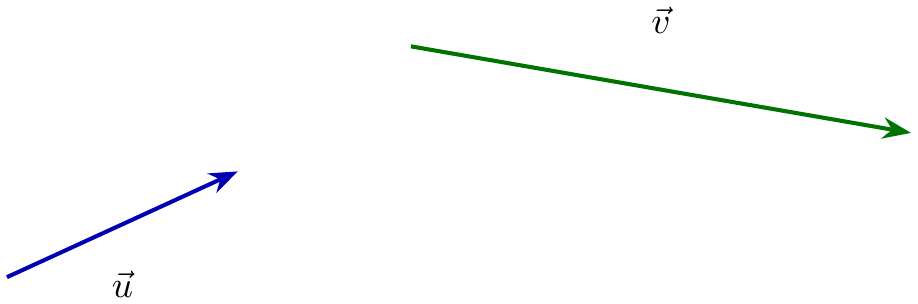
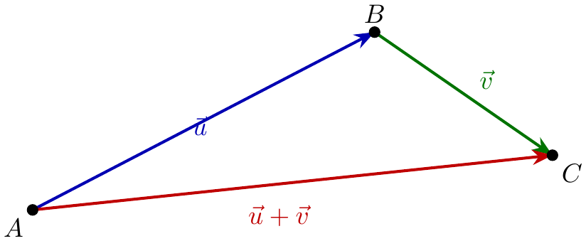
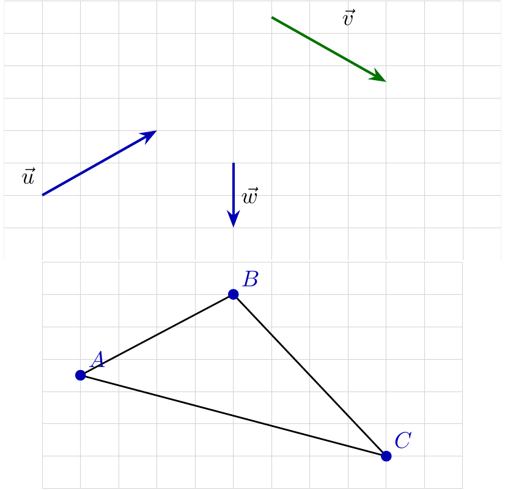
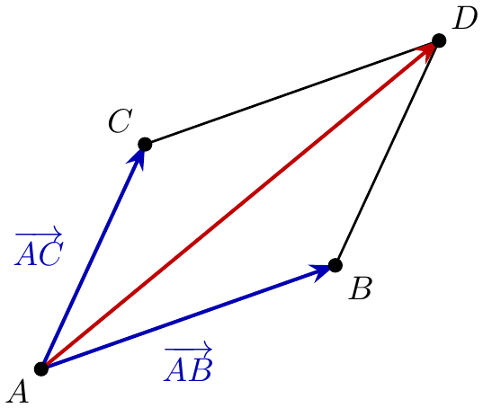
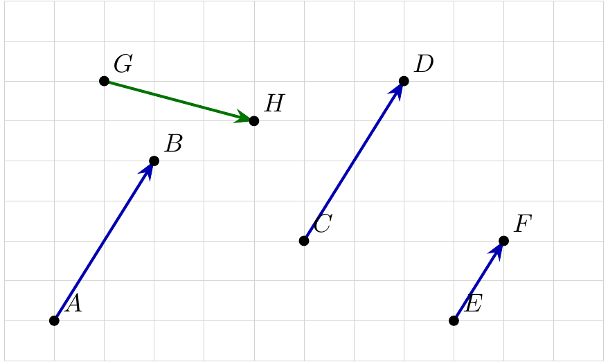

Chapitre 4 : Les vecteurs
Seconde · Chapitre 4 — Les vecteurs · cours de Frederik de Peyrelongue
I. Translation et vecteur
Si l'on a choisi une unité de longueur dans le plan, un vecteur $\vec{u}$ du plan est caractérisé par trois propriétés :
- une direction ;
- un sens ;
- une longueur (sa norme).
Représentation d'un vecteur :
Si $A$ et $B$ ne sont pas confondus, on représente le vecteur $\AB$ par une flèche d'origine $A$ et d'extrémité $B$.

Remarque :
Visuellement, ce vecteur donne l'idée d'un déplacement qui indique :
- la direction, celle de la droite $(AB)$ ;
- le sens, de $A$ vers $B$ ;
- la longueur $AB$.
- La longueur d'un vecteur est aussi appelée la norme de ce vecteur. On écrira : $AB=\|\AB\|$.
Il ne faut pas confondre sens et direction. Une droite définit une seule direction : ici, la direction de la droite $(AB)$. Une direction étant choisie, il existe deux sens possibles :
- aller de $A$ vers $B$ ;
- aller de $B$ vers $A$.
La notion de sens n'a donc pas de signification si l'on n'a pas préalablement choisi une direction.
On donne un vecteur $\AB$ et deux points distincts $C$ et $D$.
- Construire le point $E$ tel que $\AB=\overrightarrow{CE}$, en utilisant un milieu.
- Construire le point $F$ tel que $\AB=\overrightarrow{DF}$, en utilisant le compas.
- Prouver que $CEFD$ est un parallélogramme.
Soit $\vec{u}$ un vecteur du plan. La translation de vecteur $\vec{u}$ est la transformation du plan qui, à tout point $M$ du plan, associe l'unique point $M'$ tel que
On dit que $M'$ est l'image de $M$ par la translation de vecteur $\vec{u}$.
II. Égalité de deux vecteurs
On dit que deux vecteurs sont égaux lorsqu'ils ont même direction, même sens et même norme.
$\AB=\CD$ si et seulement si le quadrilatère $ABDC$ est un parallélogramme.
Démonstration : la démonstration d'une propriété comportant un « si et seulement si » se fait en deux temps.
On démontre la propriété directe : si $\AB=\CD$, alors $ABDC$ est un parallélogramme.
Si $\AB=\CD$, par définition, la translation qui transforme $A$ en $B$ transforme $C$ en $D$. Par conséquent, $[AD]$ et $[BC]$ ont le même milieu (par définition de la translation).
Un quadrilatère dont les diagonales se coupent en leur milieu est un parallélogramme. Donc $ABDC$ est un parallélogramme.
On démontre la propriété réciproque : si $ABDC$ est un parallélogramme, alors $\AB=\CD$.
Si $ABDC$ est un parallélogramme, alors ses diagonales se coupent en leur milieu. Donc $[AD]$ et $[BC]$ ont le même milieu.
Donc la translation de vecteur $\AB$ transforme $C$ en $D$, soit $\AB=\CD$.

Élément de logique
La proposition $P_{1}$ : « $ABCD$ est un parallélogramme ».
La proposition $P_{2}$ : $\AB=\CD$.
On a : $P_{1}$ est une condition nécessaire pour $P_{2}$, et $P_{2}$ est une condition suffisante pour $P_{1}$.
Lorsque l'on a une équivalence entre les deux propositions, on note $P_{1}\iff P_{2}$ :
III. Représentant d'un vecteur
Si $\AB=\CD=\overrightarrow{EF}$, alors on dit que ces vecteurs sont des représentants d'un même vecteur, que l'on note $\vec{u}$.
Un vecteur admet une infinité de représentants.

Soit $O$ un point du plan et un vecteur donné. Il existe un point $M$ unique tel que $\overrightarrow{OM}=\vec{u}$.

IV. Vecteurs particuliers
Vecteur nul : lorsque $A$ et $B$ sont confondus, $\AB$ se note $\vec{AA}$ ; on dit que $\vec{AA}$ est le vecteur nul, noté $\vec{0}$.
Le vecteur opposé : le vecteur opposé au vecteur $\AB$ est le vecteur associé à la translation qui transforme $B$ en $A$. Il a même direction et même norme que le vecteur $\AB$, mais il est de sens opposé.
On le note $\overrightarrow{BA}$ ou encore $-\AB$.
$I$ est le milieu du segment $[AB]$ si, et seulement si

Preuve : si $I$ est le milieu de $[AB]$, alors les droites $(AI)$ et $(IB)$ ont même direction et même sens (de $A$ vers $I$ et de $I$ vers $B$) et $IA=IB$ : donc les deux vecteurs $\overrightarrow{AI}$ et $\overrightarrow{IB}$ ont même direction, même sens et même norme, ils sont donc égaux.
Réciproquement : si $\overrightarrow{AI}=\overrightarrow{IB}$, alors $(AI)$ et $(IB)$ sont parallèles, et donc confondues car elles ont un point en commun ; et, comme $IA=IB$, $I$ est donc le milieu de $[AB]$.
V. Sommes de vecteurs
Définition et construction :

Soient $\vec{u}$ et $\vec{v}$ deux vecteurs. La somme des vecteurs $\vec{u}$ et $\vec{v}$ est le vecteur associé à la translation résultant de l'enchaînement des translations de vecteur $\vec{u}$ et de vecteur $\vec{v}$.
On l'écrit $\vec{u}+\vec{v}$.
Pour construire le vecteur $\vec{u}+\vec{v}$, on « met les vecteurs bout à bout » :
Soit $\AB$ un représentant de $\vec{u}$ et $\overrightarrow{BC}$ un représentant de $\vec{v}$.
Le vecteur $\AC$ est alors un représentant de $\vec{u}+\vec{v}$.

Exercices :

Construire les sommes suivantes : $\vec{u}+\vec{v}$ \ ; \ $\vec{u}+\vec{w}$ \ ; \ $\vec{u}+\vec{v}+\vec{w}$.
Construire les points $D$ et $E$ tels que :
Pour tous points $A$, $B$ et $C$ :
Réduire les sommes de vecteurs en utilisant la relation de Chasles :
- $\AB-\AC=$
- $\AB-\AC-\overrightarrow{BA}+\overrightarrow{BC}=$
- $\overrightarrow{AM}+\overrightarrow{NP}-\overrightarrow{AD} +\overrightarrow{MN}-\overrightarrow{BP}+\overrightarrow{BC}=$
Pour tous points $A$, $B$, $C$ et $D$ :

VI. Vecteurs colinéaires et applications en géométrie
6.1 Vecteurs colinéaires
Deux vecteurs sont colinéaires s'ils ont la même direction.
Deux vecteurs non nuls $\vec{u}$ et $\vec{v}$ sont colinéaires si, et seulement si, il existe un réel $k$ tel que

Citer les vecteurs colinéaires de la figure ci-dessus.
Trouver une relation vectorielle reliant les vecteurs colinéaires à chaque fois que cela est possible.
$A$ et $B$ sont deux points distincts, $M$ est le point tel que
\[ \frac{1}{2}\,\AB-\frac{1}{3}\,\overrightarrow{BM}=\vec{0} . \]Exprimer $\overrightarrow{AM}$ en fonction de $\AB$. En déduire que $\AB$ et $\overrightarrow{AM}$ sont colinéaires. Placer le point $M$.
- $A$ et $B$ sont deux points distincts, $M$ est le point tel que $3\,\AB-2\,\overrightarrow{AM}=\vec{0}$. Justifier que $\AB$ et $\overrightarrow{AM}$ sont colinéaires. Placer le point $M$.
6.2 Droites parallèles
Les droites $(AB)$ et $(CD)$ sont parallèles si, et seulement si, les vecteurs $\AB$ et $\CD$ sont colinéaires.
Preuve :
- Si $(AB)$ et $(CD)$ sont parallèles, alors $\AB$ et $\CD$ ont donc même direction : ils sont colinéaires.
- Réciproquement, si les vecteurs $\AB$ et $\CD$ sont colinéaires, les droites $(AB)$ et $(CD)$ ont alors même direction : elles sont donc parallèles.
6.3 Points alignés
Les points $A$, $B$ et $C$ sont alignés si, et seulement si, $\AB$ et $\AC$ sont colinéaires.
Preuve : si les points $A$, $B$ et $C$ sont alignés, alors les droites $(AB)$ et $(AC)$ sont parallèles et, d'après le théorème précédent, les vecteurs $\AB$ et $\AC$ sont colinéaires.
Réciproquement, si les vecteurs $\AB$ et $\AC$ sont colinéaires, les droites $(AB)$ et $(AC)$ sont donc parallèles ; elles sont aussi sécantes au point $A$, elles sont donc confondues : les points $A$, $B$ et $C$ sont donc alignés.
6.4 Milieu d'un segment
Soient $A$ et $B$ deux points du plan.
- $I$ est le milieu de $[AB]$ si et seulement si $\AB=2\,\overrightarrow{AI}$.
- $I$ est le milieu de $[AB]$ si et seulement si, pour tout point $M$, $\overrightarrow{MA}+\overrightarrow{MB}=2\,\overrightarrow{MI}$.